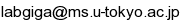

GCOEシンポジウム (「数学新展開の研究教育拠点」東京大学)
臨床医学における数理
基調講演者
- 大坂元久 (
日本獣医生命科学大学獣医学部教授，東京大学大学院数理科学研究科連携客員教授)
- 植田琢也 (聖路加国際病院放射線科医幹，東京大学大学院数理科学研究科連携客員准教授)
第2回
- 日時： 2012年10月24日(水)〜26日(金)
- 場所： 東京大学大学院数理科学研究科 002室 (アクセス)
- 共催： 文部科学省 平成24年度 数学・数理科学と諸科学・産業との連携研究ワークショップ：拡がっていく数学～期待される『見えない力』～
- 共催： 科学技術振興機構戦略的創造研究推進事業CREST「数学と諸分野の協働によるブレークスルーの探索」研究領域『
放射線医学と数理科学の協働による高度臨床診断の実現』研究チーム
講演者
- 芦原貴司(滋賀医科大学循環器内科・不整脈センター)
- 本谷秀堅(名古屋工業大学大学院工学研究科)
- 戸次直明(日本大学工学部)
- 森田善久(龍谷大学理工学部)
- 林邦好(岡山大学大学院環境生命科学研究科)
スケジュールとプログラム
[プログラム (PDF 120KB) /
ポスター (PDF 500KB)]
- 10月24日(水)
- オープニング (10:20-10:30)
- 基調講演 (10:30-11:30) 大坂元久 (日本獣医生命科学大学獣医学部)
心臓でスパイラル波が起きる条件
- 講演 (13:30-14:15) 本谷秀堅(名古屋工業大学大学院工学研究科)
3次元医用画像からの臓器領域自動抽出のための統計形状モデル
- 講演 (14:30-15:15) 芦原貴司(滋賀医科大学循環器内科)
バイドメインモデルによる電気的除細動メカニズムの理論的研究
- 討論 (15:30-16:30)
- 10月25日(木)
- 基調講演 (10:30-11:30) 大坂元久 (日本獣医生命科学大学獣医学部)
スパイラル波出現のための心臓突然死の数理モデル
- 講演 (13:30-14:15) 森田善久(龍谷大学理工学部)
複素ギンツブルク・ランダウ方程式：導出と特徴的ダイナミクス
- 討論とまとめ (14:30-16:00)
- 10月26日(金) 連携研究ワークショップ『血管と心臓の数理』
- オープニング (10:15-10:25)
- 基調講演 (10:30-11:30) 植田琢也 (聖路加国際病院放射線科)
大血管の血行動態の数理
- 講演 (11:45-12:30) 林邦好 (岡山大学大学院環境生命科学研究科)
影響関数を利用した判別予測に対する影響標本集合の検出と制御
- 討論 (12:45-14:00)
- 基調講演 (14:15-15:15) 大坂元久 (日本獣医生命科学大学獣医学部)
リズムの視点からの心臓突然死
- 講演 (15:30-16:15) 戸次直明 (日本大学工学部)
心室中隔壁上の興奮伝播波に対する位相特異点の数理モデル
- 討論 (16:30-17:00)
第1回
- 日時： 2012年6月5日(火)〜7日(木)
- 場所： 東京大学大学院数理科学研究科 002室 (アクセス)
- 共催： 科学技術振興機構戦略的創造研究推進事業CREST「数学と諸分野の協働によるブレークスルーの探索」研究領域『
放射線医学と数理科学の協働による高度臨床診断の実現』研究チーム
講演者
- 新井仁之 (東京大学大学院数理科学研究科)
- 高木周
(東京大学大学院工学系研究科機械工学専攻)
- 高木清二
(北海道大学電子科学研究所)
- 角田博子 (聖路加国際病院放射線科)
スケジュールとプログラム
プログラム (PDF 111 KB)
- 6月5日(火)
- オープニング (10:15-10:25)
- 基調講演A1 (10:30-11:30) 大坂元久
致死性不整脈の数理モデル化における臨床から見た問題点と提案
- 基調講演B1 (13:30-14:30) 植田琢也
臨床医療と数理I − 画像診断における数理的アプローチ
- 講演C (15:00-15:45) 新井仁之
人の視知覚及び錯覚の数理解析と画像処理への応用
- 講演D (16:00-16:45) 角田博子
乳癌の臨床とその画像
- 総合討論1 (17:00-18:00)
- 6月6日(水)
- 基調講演B2 (10:30-11:30) 植田琢也
画像診断と数理II − 画像診断医の病態評価のアルゴリズム
- 基調講演A2 (13:30-14:30) 大坂元久
致死性不整脈の数理モデル化の具体例
- 講演E (15:00-15:45) 高木清二
心臓に発生した回転ラセン波の低電圧ショックによる除去
- 講演F (16:00-16:45) 高木周
画像データに適した流体構造連成手法の開発と血栓症のシミュレーション
- 総合討論2 (17:00-18:00)
- 6月7日(木)
- 基調講演A3 (10:30-11:30) 大坂元久
臨床応用をめざした致死性不整脈の数理モデル化
- 総合討論3 (13:30-15:00)
世話人
-
儀我美一(東京大学大学院数理科学研究科)
- 齊藤宣一
(東京大学大学院数理科学研究科)
事務局・連絡先
儀我研究室 ()
(Last Update: 2012.05.08)